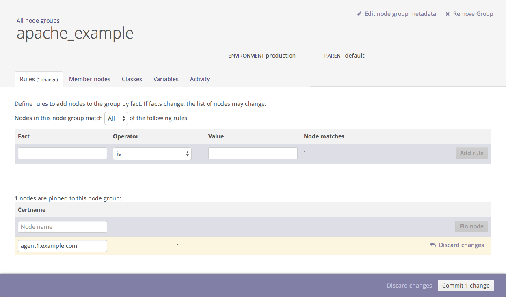

In this procedure, you'll create the apache_example group to later add the
apache class to it.
-
From the console, click Classification in the navigation
bar.
-
In the Node group name field, name your group (e.g.,
apache_example.
-
Click Add group.
-
Click the apache_example group.
-
From the Rules tab, in the
Certname area, in the Node
name field, enter the name of the PE-managed node you'd like to
add to this group.
-
Click Pin node.
-
Click Commit 1 change.

-
Repeat steps 5 - 7 for any additional nodes you want to add.